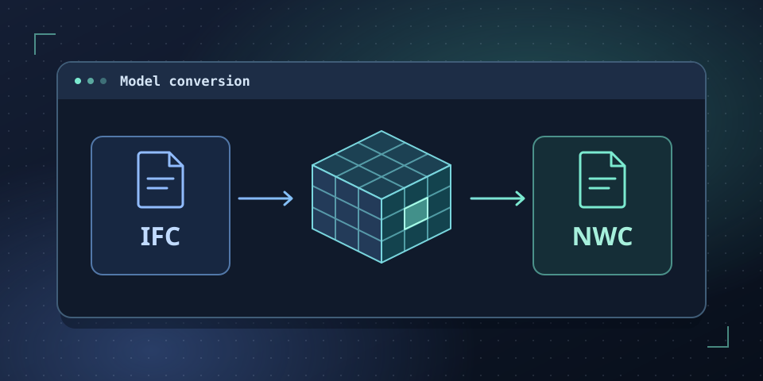
IFC to NWC Converter
Creates Navisworks Cache (NWC) files directly from IFC on Windows without requiring a Navisworks installation.
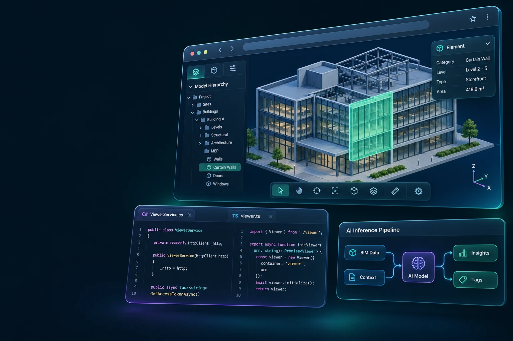
status: available_for_new_opportunities
<Full Stack Developer /> & BIM Automation Specialist
I turn complex construction workflows into software, from browser-based BIM tools to cloud platforms and automated model pipelines.
Engineering automation, construction platforms, and full stack applications.

Creates Navisworks Cache (NWC) files directly from IFC on Windows without requiring a Navisworks installation.
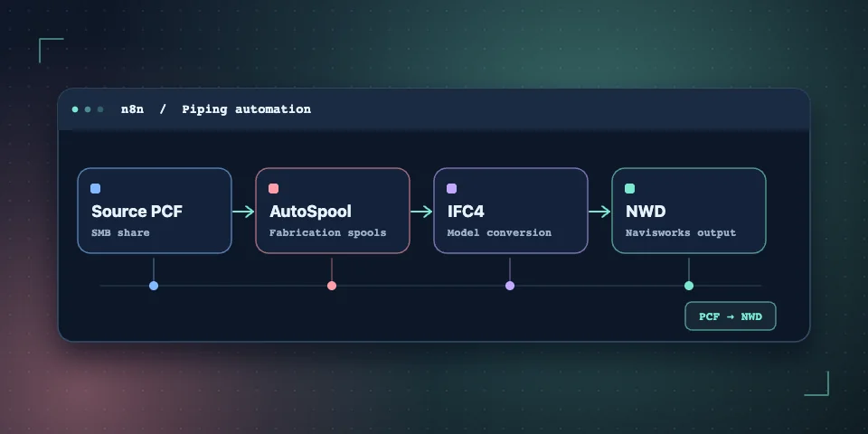
Custom n8n nodes take piping files through AutoSpool, IFC conversion, and Navisworks publishing to deliver a processed NWD.
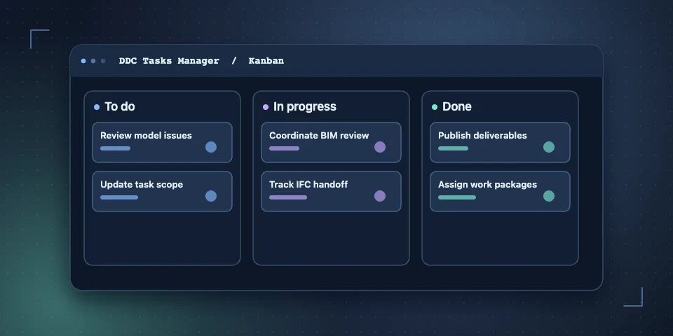
A central workspace for construction teams to plan and track work with Kanban boards, calendars, analytics, and Autodesk integration.
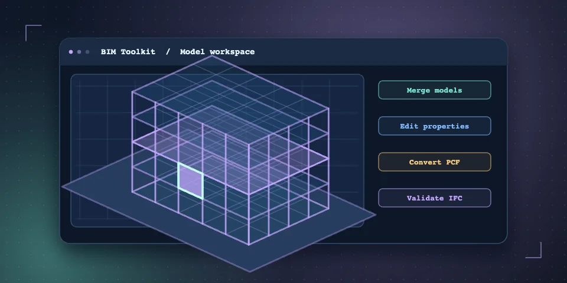
A browser-based toolkit for viewing, merging, editing, and converting engineering models with real-time processing updates.
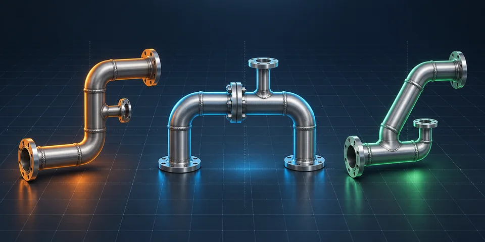
High-performance piping spool generation engine that parses PCF files into optimized spools utilizing spatial hashing and graph-based topology.
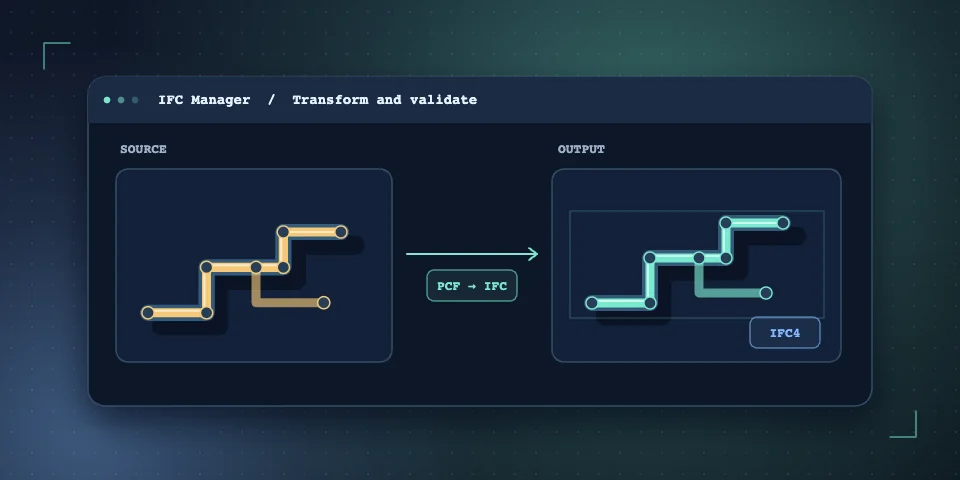
The IFC Manager is a robust Windows desktop toolkit designed for BIM managers to seamlessly process, validate, and manipulate IFC models according to Saipem's strict project protocols.
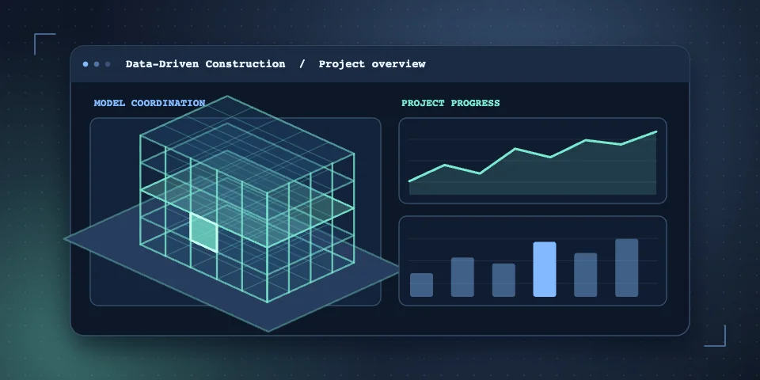
The Data-Driven Construction (DDC) Platform serves as Saipem's primary enterprise intelligence system. It brings together BIM data, project metrics, and advanced analytics in a centralized ecosystem designed to manage multiple simultaneous megaprojects.
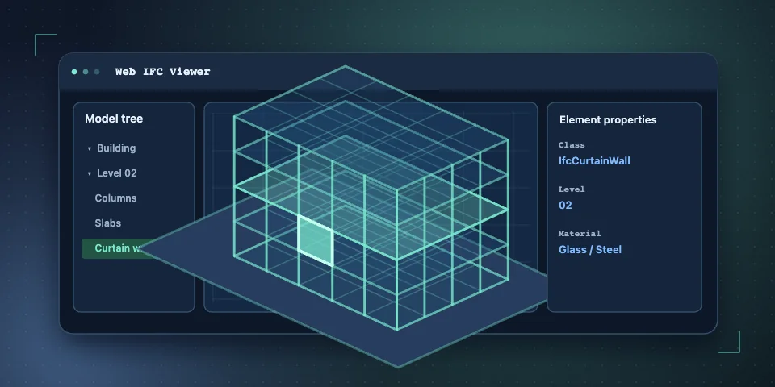
Designed and developed a high-performance web application tailored for the visualization and manipulation of BIM (Building Information Modeling) models using the Industry Foundation Classes (IFC) standard.
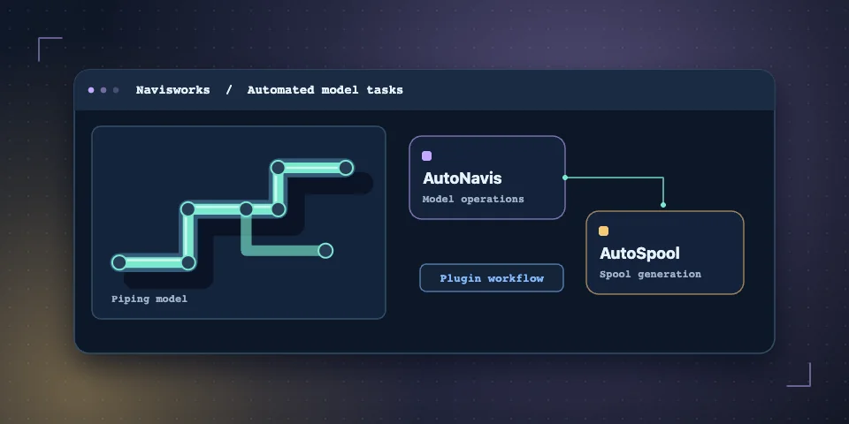
Developed two highly specialized plugins for Autodesk Navisworks to streamline and automate complex BIM data workflows specifically within structural and piping disciplines at Saipem.
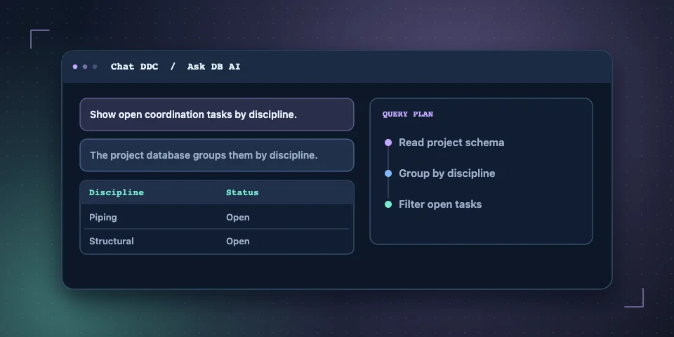
Chat DDC provides an AI-driven, natural language interface that allows construction stakeholders to directly interrogate project databases without requiring any SQL knowledge.
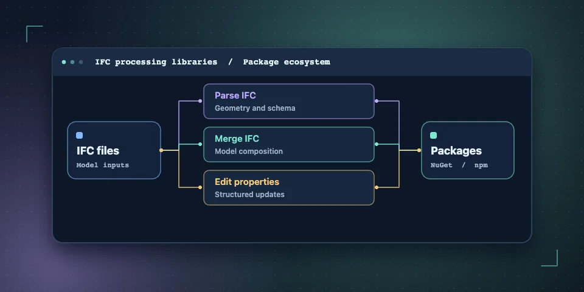
A comprehensive collection of cross-platform libraries engineered for processing Industry Foundation Classes (IFC) data, deployed as open-source packages across NuGet, npm, and other registries.
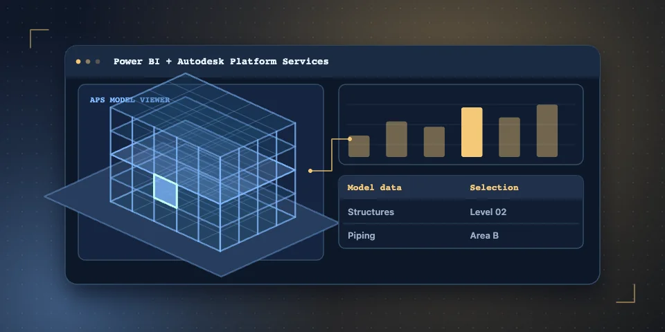
Engineered a suite of custom Power BI visual components that seamlessly connect 3D BIM models with high-level business intelligence dashboards, delivering powerful cross-filtering between spatial objects and tabular datasets.
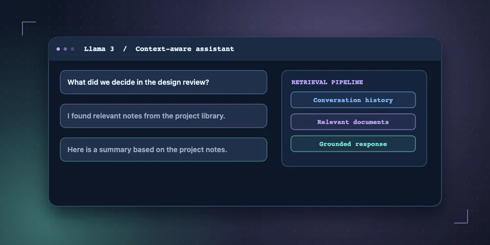
Context-aware chatbot for business collaboration using conversational memory and RAG via Embedchain. The Llama 3 model retains context across long sessions and provides accurate, domain-specific responses.
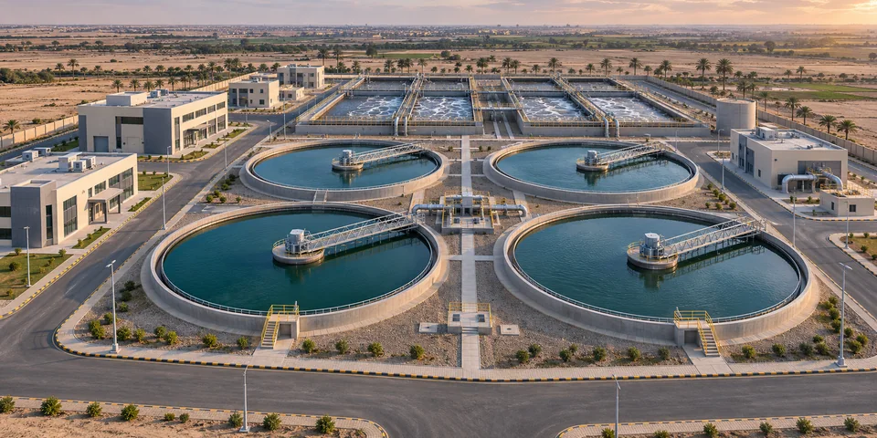
A comprehensive academic showcase applying advanced project management methodologies to a major national wastewater treatment facility handling massive capacities in Egypt.
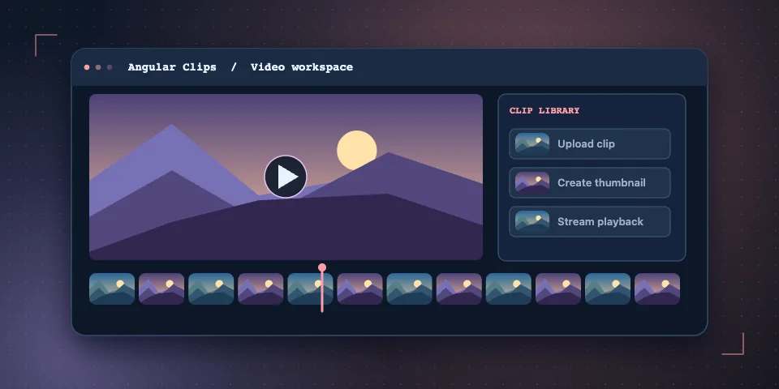
Developed a full-stack, server-side rendered (SSR) video upload and streaming application using Angular 17 and Firebase. The platform allows users to securely authenticate, drop-and-upload video clips, autogenerate thumbnails, and manage their content via a dedicated dashboard.
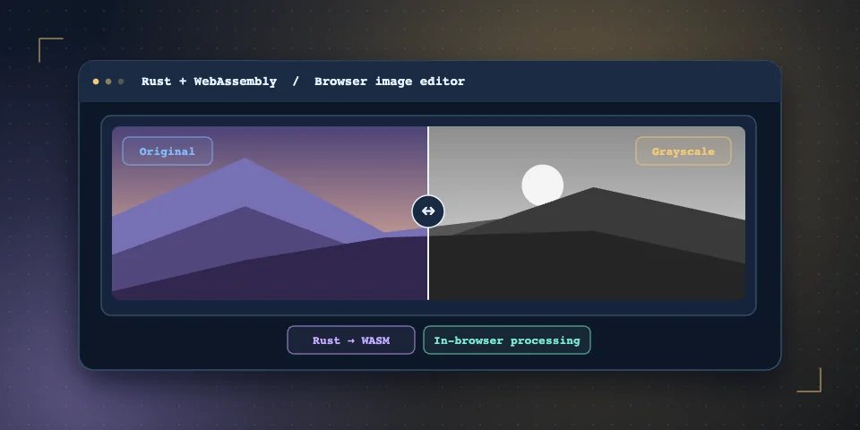
Developed a high-performance web-based image editor leveraging WebAssembly (WASM) to perform computationally intensive image processing directly in the browser. Deployed on Vercel.
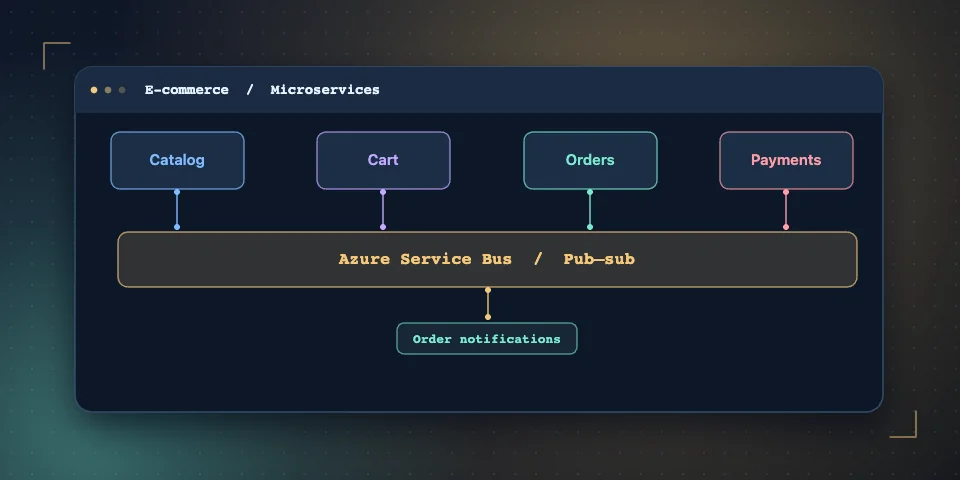
Scalable, full-stack e-commerce platform built from the ground up using isolated microservices. Integrates Azure Service Bus for pub/sub messaging and Stripe for secure payments.
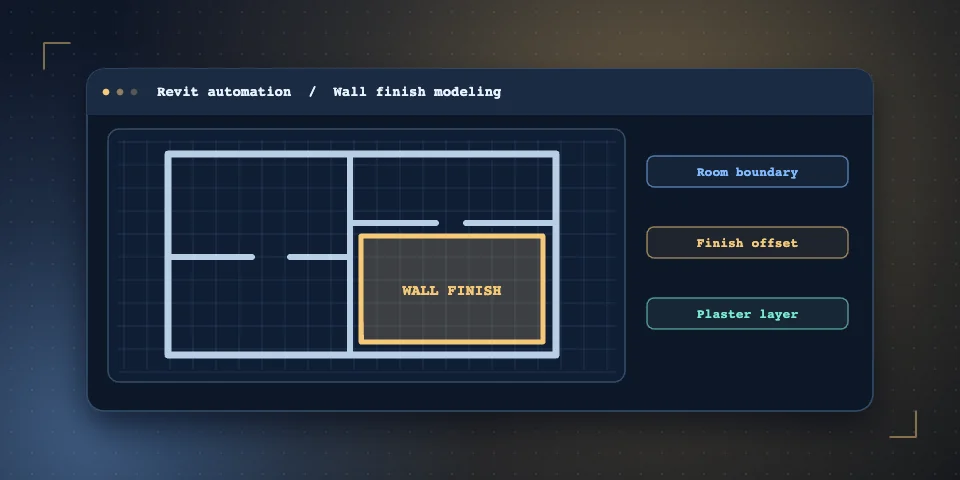
Custom Revit extension automating wall finish modeling. Algorithmically detects room boundaries and generates plastering layers, eliminating repetitive manual work for BIM modelers.
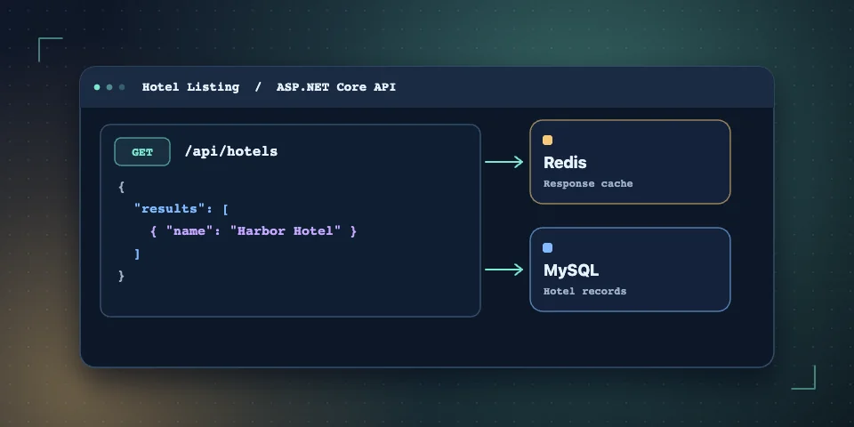
Robust RESTful API for hotel management with advanced performance optimizations using response caching to minimize load times. Entity Framework Core with MySQL for efficient data handling.
No projects match your search.
From technical office and site engineering to building software for construction teams.
Abu Dhabi, UAE
Remote, Egypt
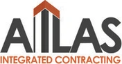
Technical Office EngineerATLAS INTEGRATED CONTRACTINGPort Said, Egypt
Egypt
Egypt
Port Said, Egypt
Port Said, Egypt
I’m a full stack developer and BIM automation specialist with a background in civil engineering and over six years of experience building software for architecture, engineering, and construction.
I work remotely from Egypt as a BIM Coordinator and Software Developer at Saipem. I maintain the DDC platform and DDC Tasks Manager, build n8n workflows, and maintain AutoSpool.
Civil Engineering · Port Said University
2021 · Port Said, Egypt
Open to software development, BIM automation, and cloud architecture roles. Based in Egypt and available globally.